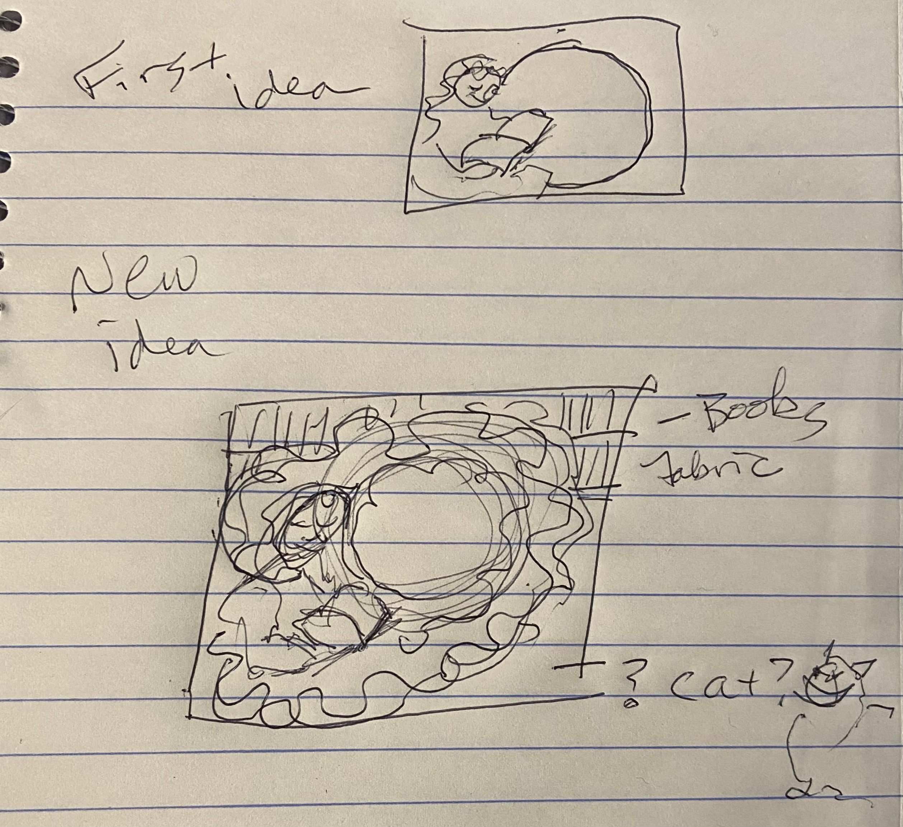
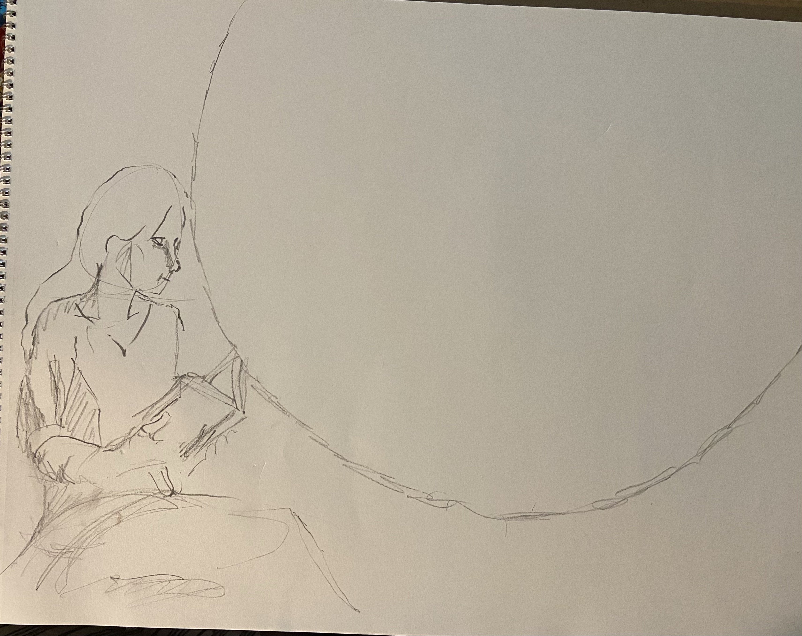
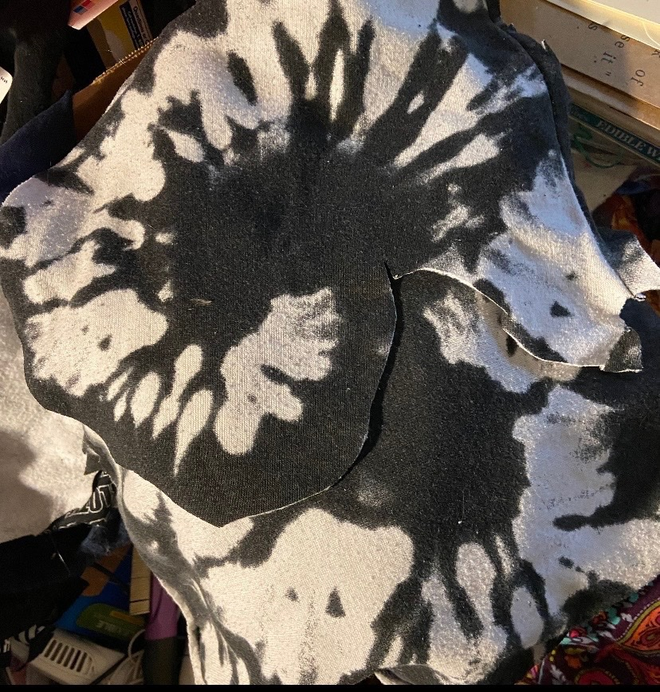
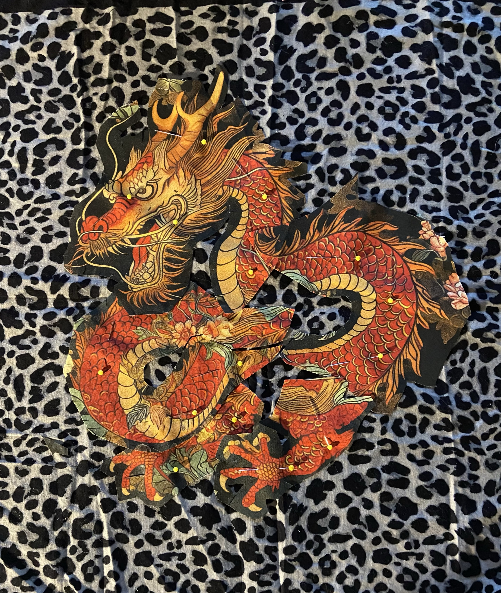
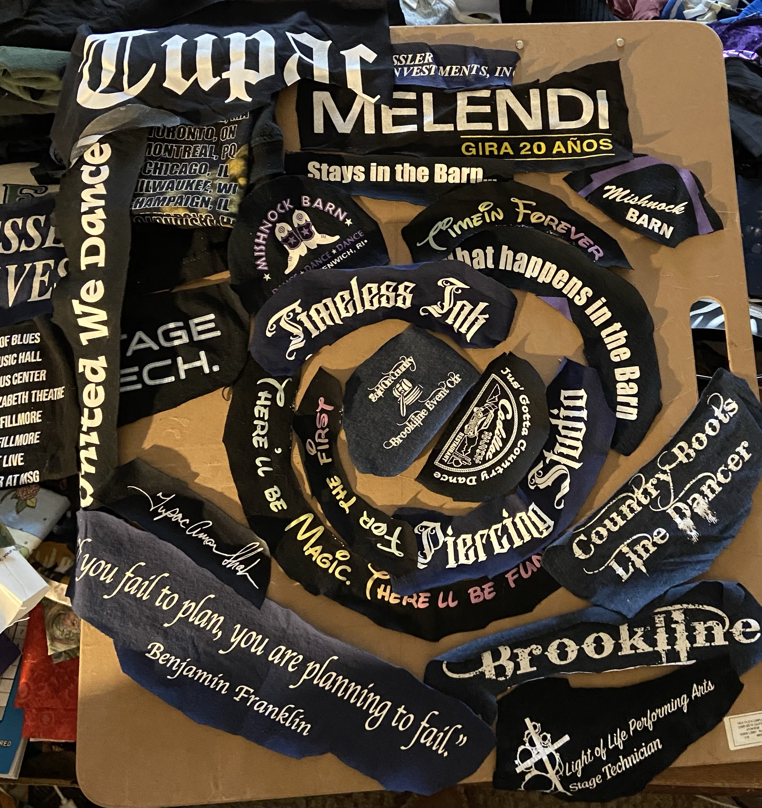
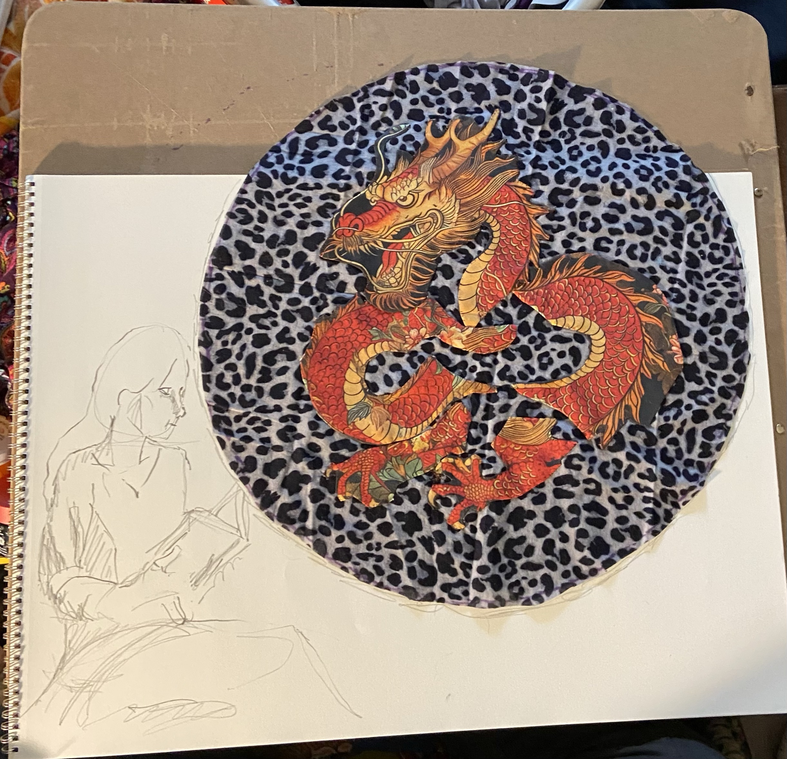
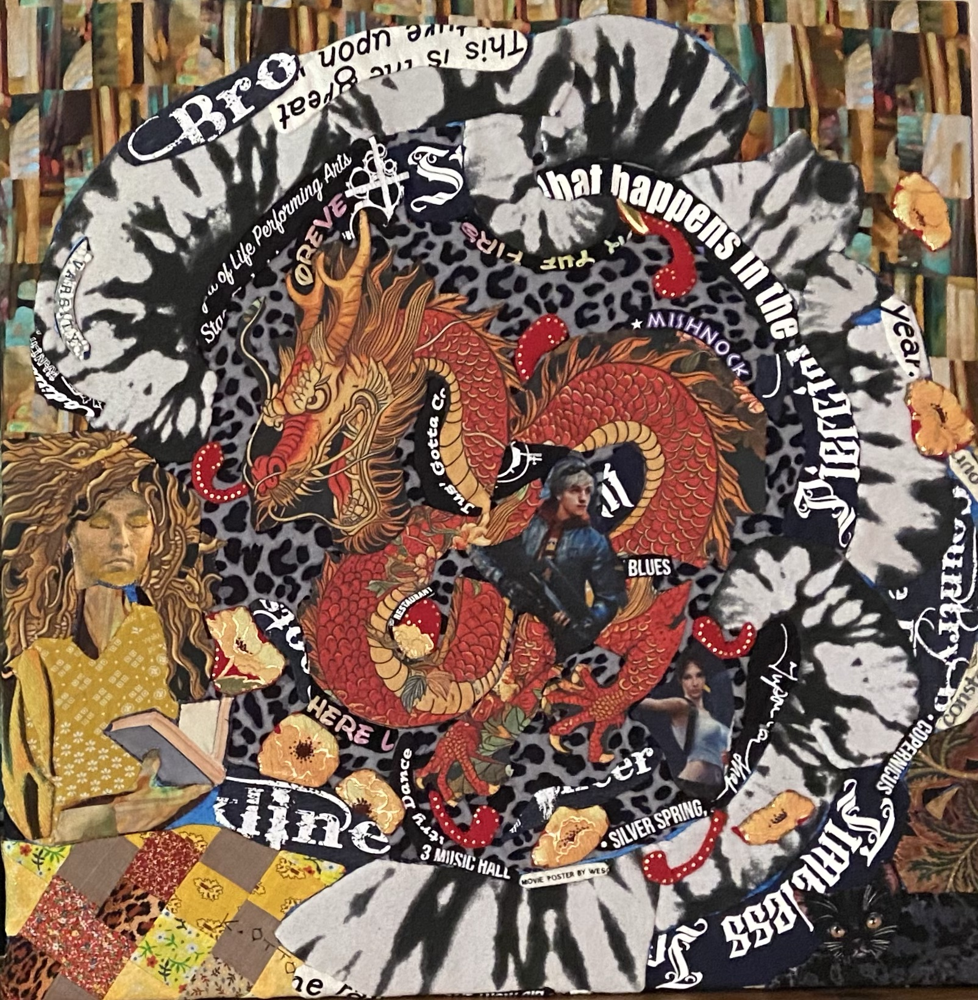
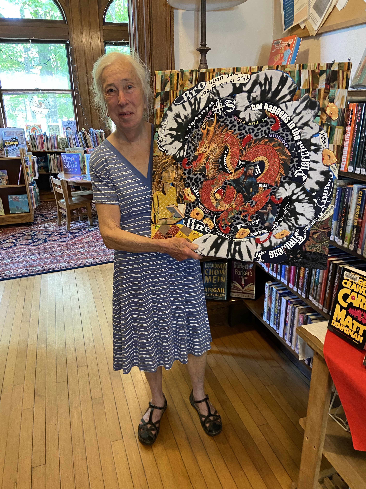

Kathy Morris Collection
Library Portal
A textile doorway into the worlds we enter when a book makes the room around us disappear.
The idea
I’ve talked to people who love reading and people who don’t. What I’ve found is that those who don’t often never quite leave the room they’re sitting in; their imagination doesn’t fully take over. They’re reading words printed on paper. But for people who do get pulled in, the room disappears. Everything around them dissolves and is replaced by the world being described on the page. That feeling of leaving one world and stepping into another is the idea behind Library Portal.
The making
Building the portal, one layer at a time.







